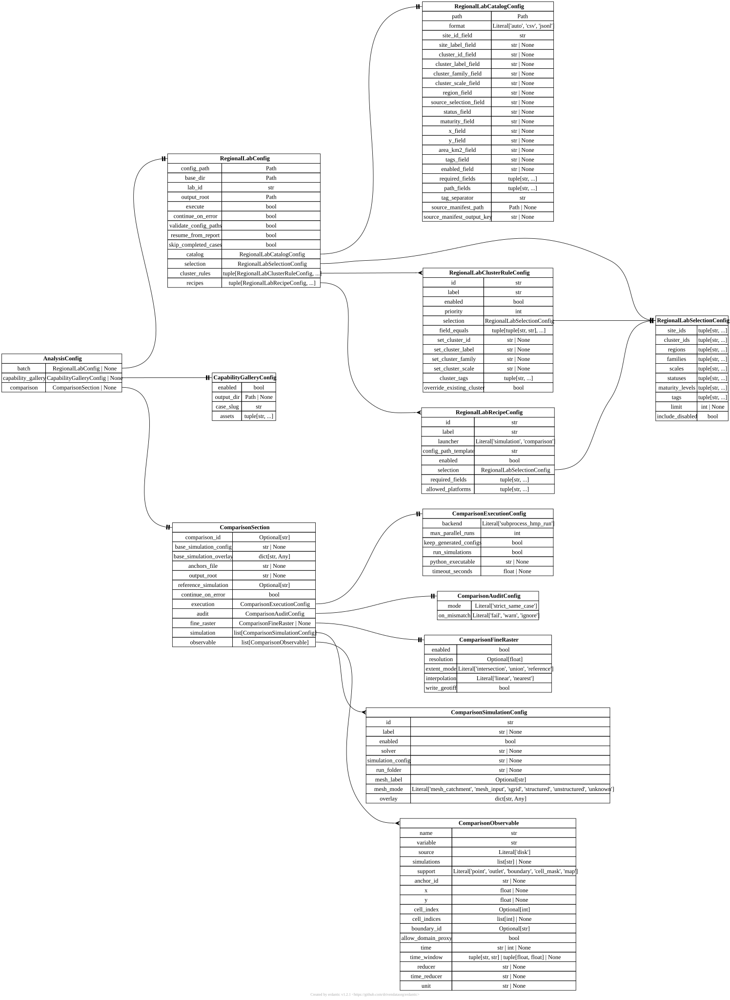

[analysis] AnalysisConfig#
TOML section: [analysis]
Pydantic model: AnalysisConfig defined in hydromodpy.analysis.config.
Hub aggregating every post-simulation analysis sub-section.
Each field is optional: [analysis.capability_gallery] selects figures
for the versionable gallery, and [analysis.comparison] drives the
comparison launcher.
Fields#
batch
in TOML:
[analysis.batch]
RegionalLabConfig | None default = None user source
Optional regional-lab batch settings loaded from [analysis.batch]. Parsed standalone via RegionalLabLauncher under the section name [regional_lab].
Fields of RegionalLabConfig
execute
bool default = True user source
If False, the planner runs but no child workflows are launched.
share_regional_flow
bool default = False user source
Materialize one sealed regional flow job for eligible child simulations.
continue_on_error
bool default = True user source
If True, keep dispatching siblings after a child failure.
validate_config_paths
bool default = True user source
If True, ensure each rendered child config path exists before run.
resume_from_report
bool default = True user source
If True, replay the previous report to skip already-completed cases.
skip_completed_cases
bool default = True user source
If True, do not re-run cases marked as completed in the report.
catalog
in TOML:
[analysis.batch.catalog]
RegionalLabCatalogConfig required user source
Site catalog source declaring the columns and filters used to enumerate runs.
Fields of RegionalLabCatalogConfig
format
str default = “auto” user source
Catalog format. ‘auto’ infers from suffix.
"auto"Infers the format from the file suffix (.csv, or .jsonl/.ndjson).
"csv"Parses the catalog as comma-separated values, one site per row.
"jsonl"Parses the catalog as one JSON object per line, one site per line.
site_label_field
str | None default = “site_label” user source
Catalog column carrying a human-readable site label.
cluster_id_field
str | None default = “cluster_id” user source
Catalog column carrying the cluster identifier.
cluster_label_field
str | None default = “cluster_label” user source
Catalog column carrying the cluster label.
cluster_family_field
str | None default = “cluster_family” user source
Catalog column carrying the cluster family name.
cluster_scale_field
str | None default = “cluster_scale” user source
Catalog column carrying the cluster spatial scale tag.
region_field
str | None default = “region_id” user source
Catalog column carrying the region identifier.
source_selection_field
str | None default = “source_selection_id” user source
Catalog column carrying the data-source selection identifier.
status_field
str | None default = “site_status” user source
Catalog column carrying the site lifecycle status.
maturity_field
str | None default = “maturity” user source
Catalog column carrying the site maturity level.
area_km2_field
str | None default = “area_km2” user source
Catalog column carrying the catchment area in km^2.
tags_field
str | None default = “tags” user source
Catalog column carrying free-form tags joined by tag_separator.
enabled_field
str | None default = “enabled” user source
Catalog column flagging whether a site is active.
required_fields
tuple[str, …] default = () user source
Catalog columns that must be present and non-empty per row.
path_fields
tuple[str, …] default = () user source
Catalog columns whose values are resolved as filesystem paths.
tag_separator
str default = “;” user source
Separator splitting the tags column into individual tags.
source_manifest_path
Path | None default = None user source
Optional site-selection manifest used to resolve the site catalog.
source_manifest_output_key
str | None default = None user source
Output key read from the site-selection manifest.
selection
in TOML:
[analysis.batch.selection]
RegionalLabSelectionConfig required user source
Top-level site selection filters applied before cluster rules and recipes.
Fields of RegionalLabSelectionConfig
site_ids
tuple[str, …] default = () user source
Whitelist of site identifiers to keep. Empty means no filter.
cluster_ids
tuple[str, …] default = () user source
Whitelist of cluster identifiers to keep. Empty means no filter.
regions
tuple[str, …] default = () user source
Whitelist of region identifiers to keep. Empty means no filter.
families
tuple[str, …] default = () user source
Whitelist of cluster family names to keep. Empty means no filter.
scales
tuple[str, …] default = () user source
Whitelist of cluster scale tags to keep. Empty means no filter.
statuses
tuple[str, …] default = () user source
Whitelist of site lifecycle statuses to keep. Empty means no filter.
maturity_levels
tuple[str, …] default = () user source
Whitelist of site maturity levels to keep. Empty means no filter.
tags
tuple[str, …] default = () user source
Required tags. A site must carry every tag listed here to pass.
limit
int | None default = None user source
Maximum number of sites to retain after filtering. None disables.
include_disabled
bool default = False user source
If True, also keep sites flagged as disabled in the catalog.
cluster_rules
in TOML:
[[analysis.batch.cluster_rules]]
tuple[RegionalLabClusterRuleConfig, …] default = () user source
Optional cluster enrichment rules applied on top of the catalog.
Fields of RegionalLabClusterRuleConfig
priority
int default = 100 user source
Application order (lower runs first) when several rules match.
selection
in TOML:
[analysis.batch.cluster_rules.selection]
RegionalLabSelectionConfig required user source
Site filters (ids, regions, families, tags) restricting which sites the rule applies to.
Fields of RegionalLabSelectionConfig
site_ids
tuple[str, …] default = () user source
Whitelist of site identifiers to keep. Empty means no filter.
cluster_ids
tuple[str, …] default = () user source
Whitelist of cluster identifiers to keep. Empty means no filter.
regions
tuple[str, …] default = () user source
Whitelist of region identifiers to keep. Empty means no filter.
families
tuple[str, …] default = () user source
Whitelist of cluster family names to keep. Empty means no filter.
scales
tuple[str, …] default = () user source
Whitelist of cluster scale tags to keep. Empty means no filter.
statuses
tuple[str, …] default = () user source
Whitelist of site lifecycle statuses to keep. Empty means no filter.
maturity_levels
tuple[str, …] default = () user source
Whitelist of site maturity levels to keep. Empty means no filter.
tags
tuple[str, …] default = () user source
Required tags. A site must carry every tag listed here to pass.
limit
int | None default = None user source
Maximum number of sites to retain after filtering. None disables.
include_disabled
bool default = False user source
If True, also keep sites flagged as disabled in the catalog.
field_equals
tuple[tuple[str, str], …] default = () user source
Column equality constraints applied on top of selection (key=value).
set_cluster_id
str | None default = None user source
Cluster id to assign to matched sites. None leaves it untouched.
set_cluster_label
str | None default = None user source
Cluster label to assign to matched sites. None leaves it untouched.
set_cluster_family
str | None default = None user source
Cluster family to assign to matched sites. None leaves it untouched.
set_cluster_scale
str | None default = None user source
Cluster scale tag to assign to matched sites. None leaves it untouched.
cluster_tags
tuple[str, …] default = () user source
Extra tags appended to the cluster of matched sites.
override_existing_cluster
bool default = False user source
If True, overwrite cluster fields already set on matched sites.
recipes
in TOML:
[[analysis.batch.recipes]]
tuple[RegionalLabRecipeConfig, …] required user source
Per-recipe expansion plans declaring which child launchers run on which sites.
Fields of RegionalLabRecipeConfig
launcher
str required user source
Child launcher dispatched per site.
"simulation"Runs each site’s generated config through the simulation workflow, one forward run.
"comparison"Runs each site’s generated config through the comparison workflow, several child runs.
config_path_template
str required user source
Template producing the child config path from a site context.
selection
in TOML:
[analysis.batch.recipes.selection]
RegionalLabSelectionConfig required user source
Site filters restricting which sites this recipe expands over.
Fields of RegionalLabSelectionConfig
site_ids
tuple[str, …] default = () user source
Whitelist of site identifiers to keep. Empty means no filter.
cluster_ids
tuple[str, …] default = () user source
Whitelist of cluster identifiers to keep. Empty means no filter.
regions
tuple[str, …] default = () user source
Whitelist of region identifiers to keep. Empty means no filter.
families
tuple[str, …] default = () user source
Whitelist of cluster family names to keep. Empty means no filter.
scales
tuple[str, …] default = () user source
Whitelist of cluster scale tags to keep. Empty means no filter.
statuses
tuple[str, …] default = () user source
Whitelist of site lifecycle statuses to keep. Empty means no filter.
maturity_levels
tuple[str, …] default = () user source
Whitelist of site maturity levels to keep. Empty means no filter.
tags
tuple[str, …] default = () user source
Required tags. A site must carry every tag listed here to pass.
limit
int | None default = None user source
Maximum number of sites to retain after filtering. None disables.
include_disabled
bool default = False user source
If True, also keep sites flagged as disabled in the catalog.
required_fields
tuple[str, …] default = () user source
Catalog columns that must be present per site for this recipe.
allowed_platforms
tuple[str, …] default = () user source
Platforms (linux, darwin, windows) on which the recipe may run.
capability_gallery
in TOML:
[analysis.capability_gallery]
CapabilityGalleryConfig | None default = None user source
Optional publication block copying selected run figures into a versionable capability-gallery source folder, loaded from [analysis.capability_gallery].
Fields of CapabilityGalleryConfig
enabled
bool default = False user source
Render (or copy) selected figures into a versionable gallery folder.
output_dir
Path | None default = None user source
Destination directory for selected gallery assets. Relative paths are resolved against the TOML directory.
case_slug
str default = “simulation_regression_flow_case” user source
Stable identifier used in the gallery manifest.
assets
tuple[str, …] default = (‘piezometric_map.png’, ‘seepage_map.png’, ‘hydrograph.png’, ‘water_budget.png’, ‘watershed_id_card.png’) user source
Asset filenames. Each
<name>.pngis first rendered through the injected render callback when a Run is available, otherwise copied from the run’s own figures directory.
comparison
in TOML:
[analysis.comparison]
ComparisonSection | None default = None user source
Optional simulation-comparison block loaded from [analysis.comparison]. Parsed standalone via SimulationComparisonConfig under the section name [comparison].
Fields of ComparisonSection
base_simulation_config
str | None default = None expert source
base_simulation_overlay
in TOML:
[analysis.comparison.base_simulation_overlay.<id>]
dict[str, Any] factory expert source
Shared TOML overlay applied to the base simulation config before any child-specific comparison.simulation.overlay. This is the preferred hook for catalog-driven site loops: a testbed can render one comparison per catalog row and inject the row values here, for example geographic outlet coordinates, target basin area, recharge chronicle path, geology/K-table paths, mesh-catchment options, initial-condition policy, or common workspace/data roots. The overlay is intentionally broad because it describes the physical case shared by all methods being compared; solver or method differences remain in each comparison.simulation.overlay.
anchors_file
str | None default = None expert source
output_root
str | None default = None expert source
reference_simulation
Optional[str] default = None expert source
continue_on_error
bool default = False dev source
execution
in TOML:
[analysis.comparison.execution]
ComparisonExecutionConfig factory dev source
Execution settings for the comparison child runs.
Fields of ComparisonExecutionConfig
backend
Literal[‘subprocess_hmp_run’] default = “subprocess_hmp_run” dev source
max_parallel_runs
int default = 1 dev source
Number of child simulations executed in parallel. Forced to 1 in V1.
keep_generated_configs
bool default = True dev source
run_simulations
bool default = True dev source
python_executable
str | None default = None dev source
timeout_seconds
float | None default = None dev source
Optional per-child timeout in seconds. None disables the timeout.
audit
in TOML:
[analysis.comparison.audit]
ComparisonAuditConfig factory dev source
Post-run audit policy applied to each child simulation.
fine_raster
in TOML:
[analysis.comparison.fine_raster]
ComparisonFineRaster | None default = None expert source
Fields of ComparisonFineRaster
resolution
Optional[float] default = None expert source
Target raster cell size in meters (EPSG:2154 grid).
extent_mode
str default = “intersection” expert source
Strategy used to derive the common raster extent across simulations.
One of: "intersection" "union" "reference"
interpolation
str default = “linear” expert source
Regridding method used to project each map onto the shared fine raster.
One of: "linear" "nearest"
write_geotiff
bool default = True expert source
Write the regridded maps as GeoTIFF files alongside the comparison figures.
simulation
in TOML:
[[analysis.comparison.simulation]]
list[ComparisonSimulationConfig] factory user source
Generated child simulations to run in the comparison. At least one entry required.
Fields of ComparisonSimulationConfig
label
str | None default = None user source
enabled
bool default = True user source
solver
str | None default = None expert source
simulation_config
str | None default = None expert source
run_folder
str | None default = None expert source
mesh_label
Optional[str] default = None user source
mesh_mode
str default = “unknown” dev source
One of: "mesh_catchment" "mesh_input" "sgrid" "structured" "unstructured" "unknown"
overlay
in TOML:
[analysis.comparison.simulation.overlay.<id>]
dict[str, Any] factory expert source
Child-specific TOML overlay merged after comparison.base_simulation_overlay and after the shared base simulation config. Use it for solver-specific settings, child labels, child process selection, or deliberately varied method parameters. Site-wide inputs that must be identical for every child in one comparison, such as outlet coordinates, recharge forcing, mesh generation settings, or reference data paths, should be placed in comparison.base_simulation_overlay instead.
observable
in TOML:
[[analysis.comparison.observable]]
list[ComparisonObservable] factory user source
Observables to compare across the declared simulations. At least one entry required.
Fields of ComparisonObservable
source
Literal[‘disk’] default = “disk” user source
Backing store for the extracted values; currently only disk outputs.
simulations
list[str] | None default = None user source
Subset of simulation ids this observable applies to; null means all.
support
str default = “point” user source
Spatial support of the observable (point, outlet, boundary, mask, map).
"point"Reads a single cell picked by x/y, anchor_id, or cell_index.
"outlet"Reads the outlet cell given by cell_index, x/y, or anchor_id, then sums it.
"boundary"Sums the cells listed in cell_indices, or the whole domain when none are listed.
"cell_mask"Same extraction as boundary: sums the cells listed in cell_indices.
"map"Keeps the full spatial field with no reduction.
anchor_id
str | None default = None user source
Optional anchor key resolved from anchors_file to provide x and y.
cell_index
Optional[int] default = None user source
Zero-based mesh cell index for point or outlet support.
cell_indices
list[int] | None default = None user source
List of zero-based mesh cell indices used for cell_mask support.
boundary_id
Optional[str] default = None user source
Identifier of the boundary group selected for boundary support.
allow_domain_proxy
bool default = False dev source
Allow whole-domain reduction as outlet fallback when no location is set.
time
str | int | None default = “all” user source
Timestep selector (timestamp, integer index, or ‘all’).
time_window
tuple[str, str] | tuple[float, float] | None default = None user source
Optional inclusive time window as a (start, end) pair, mutually exclusive with time.
reducer
str | None default = None user source
Spatial reducer applied over the support (e.g. nearest_cell, sum, max).
time_reducer
str | None default = None user source
Temporal reducer applied over the selected timesteps (e.g. mean, sum).
unit
str | None default = None user source
Optional unit label attached to the extracted values for display.
Starter TOML snippet#
Click to expand a copy-pasteable [analysis] TOML skeleton
Copy this block into your project.toml and uncomment the lines
you want to set. Sub-tables ([parent.subfield]) appear in the
order Pydantic expects them.
[analysis]
[analysis.batch]
# config_path = "" # REQUIRED
# base_dir = "" # REQUIRED
# lab_id = "" # REQUIRED
# output_root = "" # REQUIRED
# execute = true
# share_regional_flow = false
# continue_on_error = true
# validate_config_paths = true
# resume_from_report = true
# skip_completed_cases = true
# catalog = "" # REQUIRED
# selection = "" # REQUIRED
# cluster_rules = []
# recipes = "" # REQUIRED
[analysis.capability_gallery]
# enabled = false
# output_dir = ... # default = None
# case_slug = "simulation_regression_flow_case"
# assets = ["piezometric_map.png", "seepage_map.png", "hydrograph.png", "water_budget.png", "watershed_id_card.png"]
[analysis.comparison]
# comparison_id = ... # default = None
# simulation = ... # factory default
# observable = ... # factory default
Entity-relationship diagram#
{kind=link}

Click to zoom and pan. Press Esc or click outside to close.